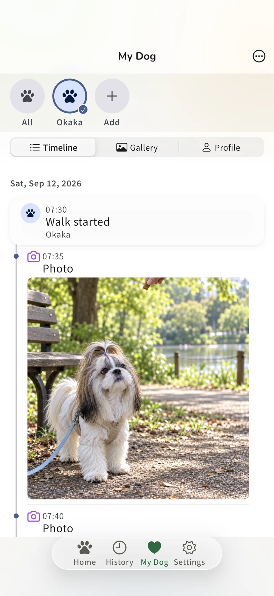
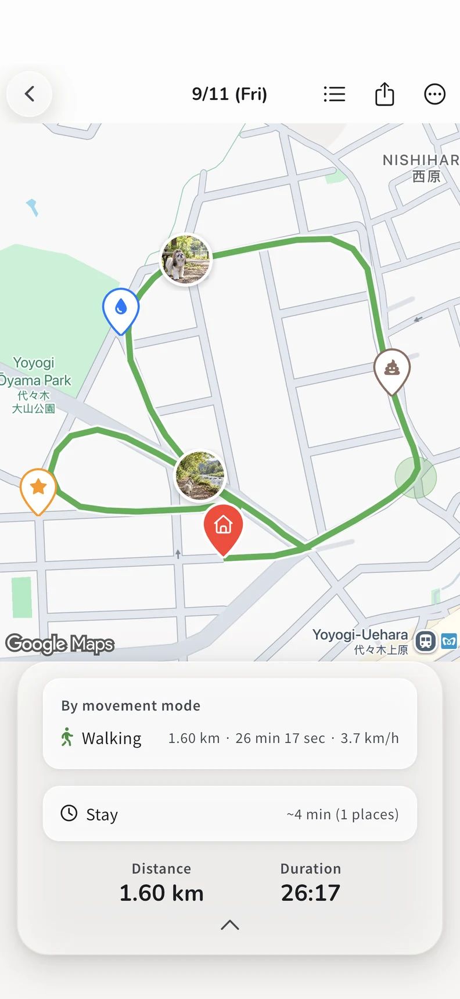
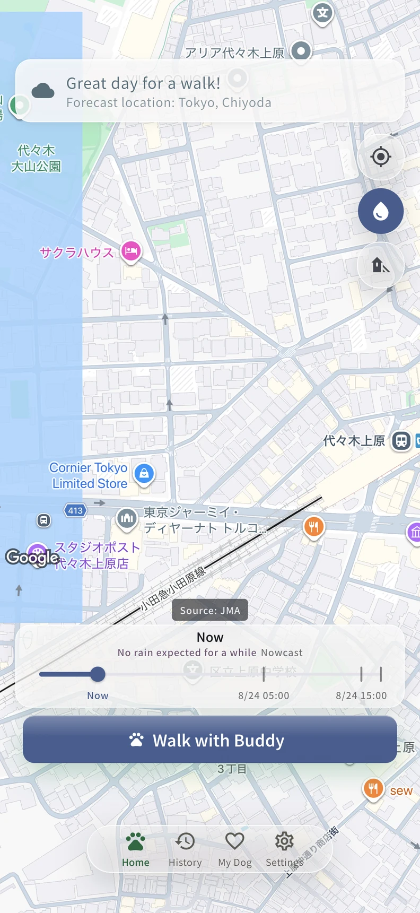
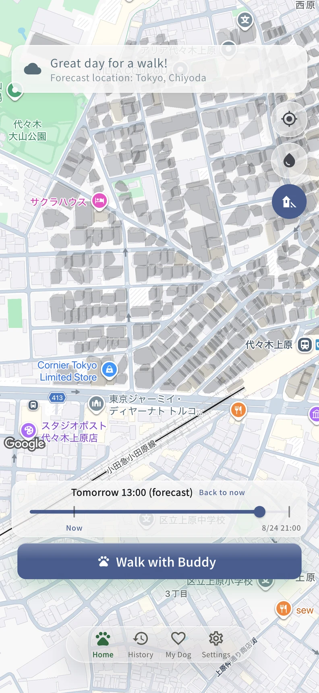
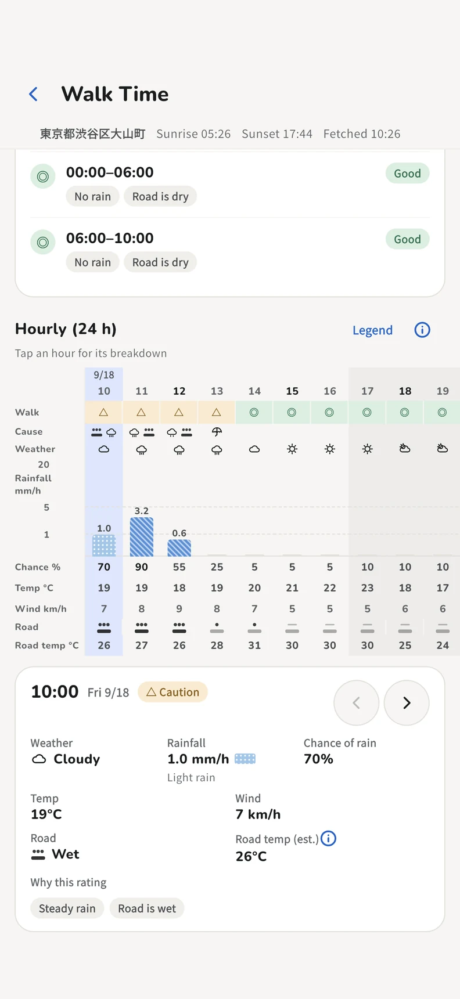
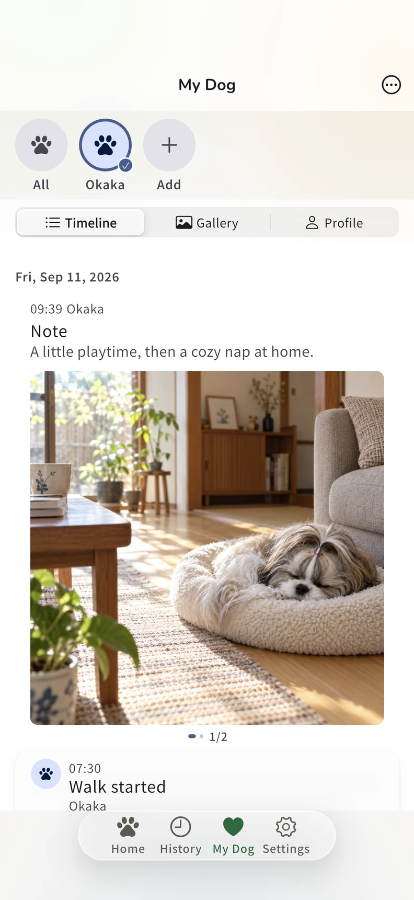
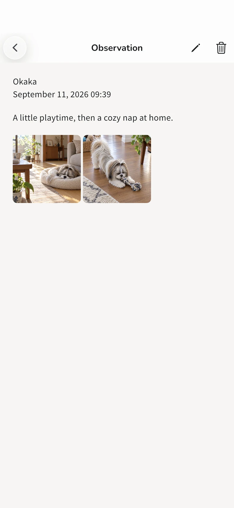
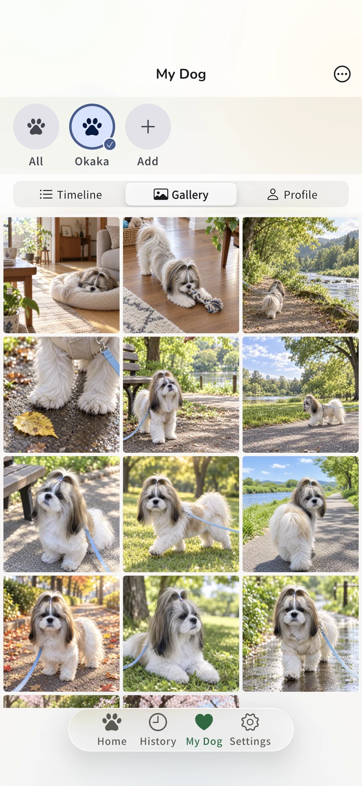
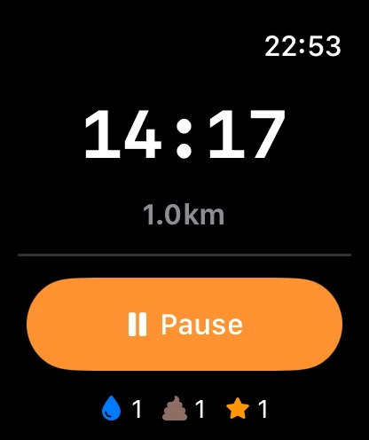

A LITTLE WALK, A LITTLE LIFE.
Little walks.
A whole life
together.
The usual route. A quiet afternoon at home.
Keep your today with Wampo.

01 — OUT THE DOOR
Same old street.
New discoveries.
Which way today?
Keep your route, distance and time.
Add toilet and photo markers along the way.

02 — A LOOK AT THE SKY
Look up.
Pick your moment.
Rain clouds, building shade and hourly weather.
A little more context before you head outside.
Follow the clouds

Check estimated shade

See hourly weather

Weather, shade and pavement temperature are estimates, not safety guarantees. Check local conditions and how your dog is feeling.
03 — THE IN-BETWEEN MOMENTS
Not a walk day?
Still their day.
Bedhead. A curious little face.
A few words and photos about an ordinary day.
Revisit them alongside your walks, in one timeline.

See an everyday observation

04 — SO MANY VERSIONS OF YOU
All those little faces.
All here.
Photos and videos, together in a gallery.
That street. That sleepy face. That little habit.
A life together, one moment at a time.

05 — A LITTLE CLOSER TO HAND
A glance at your wrist.
Eyes back on them.
Start and stop walks, or add markers, from Apple Watch.
On a compatible iPhone, follow your walk with Live Activity and Dynamic Island.
Requires compatible iPhone and Apple Watch hardware.

06 — EVERY LITTLE THING, INCLUDED
For your everyday.
All included. All free.
From recording a walk to keeping the memories.
These 18 features are currently free, with no in-app purchases.
| Feature | What it does / conditions | Free |
|---|---|---|
| Walk recording | ||
| GPS route, distance & time | Your route on a map, with the numbers to match. | Free |
| Background recording | Requires the appropriate location permission. | Free |
| Toilet & photo markers | Mark little events where they happen. | Free |
| Before you go | ||
| Rain radar | Check nearby rain clouds. Requires connectivity. | Free |
| Estimated building shade | An estimate, not a guarantee of safe conditions. | Free |
| Hourly walking weather | Temperature, rain, wind and estimated pavement temperature. | Free |
| Life with your dog | ||
| All-dog & individual timelines | Walks and everyday entries, in chronological order. | Free |
| Everyday observations & photos | A few words and photos for an ordinary day. | Free |
| Photo & video gallery | Browse the moments you have saved. | Free |
| Weekly, monthly & yearly history | Look back at your walking history over time. | Free |
| Individual walking goals | Set a walking goal for each dog. | Free |
| Reflection & sharing | ||
| After-walk comments | AI comments subject to conditions and consent, or local templates.¹ | Free |
| Photo summary sharing | Choose to share a summary of your walk. | Free |
| Hide location when sharing | Hide location details; this is not full anonymization. | Free |
| On your wrist & in your hands | ||
| Apple Watch | Start, stop and add markers. Requires compatible hardware. | Free |
| Live Activity / Dynamic Island | Follow your walk on a compatible iPhone. | Free |
| Backup export & restore | Export your records to a file and restore them. | Free |
| On-device records & analytics choice | Analytics is optional. See the policy for consent and external services. | Free |
¹ For completed walks with at least 20 minutes of total elapsed time and dedicated consent, aggregate data is sent to Firebase AI Logic / Gemini to generate a comment. Otherwise, including generation failures, local templates are used.
Some features require permissions or connectivity. For data handling and external services, see our privacy policy.
Are my memories automatically public?
No. Sharing is something you choose to do. Hiding location details does not guarantee full anonymization.
Need a little help?
SAME TIME TOMORROW?
Tomorrow,
we walk again.
Find Wampo on the App Store ↗
The next little chapter starts with Wampo.